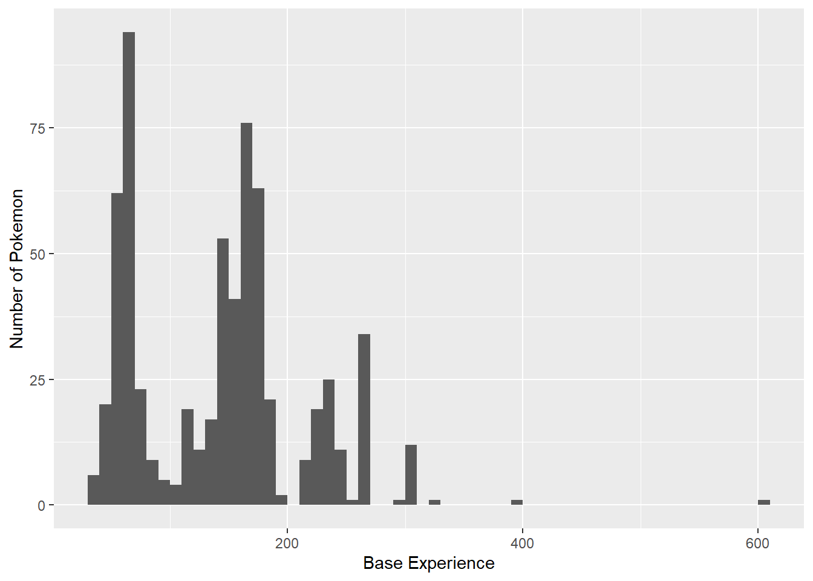

library(here)
library(readr)
library(dplyr)
library(ggplot2)
library(rsample)
library(tidymodels)
library(tidyclust)
library(GGally)Math 437 Final Project
Summary
My objective is to see if the K-means Clustering Algorithm is capable of grouping Pokemon who are at their final stage separately from Pokemon who are at their first stage. At the same time, seeing where Pokemon who cannot evolve end up. In my model, I used base_experience, hp, attack, defense, special_attack, special_defense, and speed.
For some context, the number in evo_stage for each Pokemon is formatted as the first number being the current stage of the pokemon, and the second number being how many stages that Pokemon has. For example, Charmander has an evo_stage of 13 because it is at its first stage and has three stages. Charmander’s evolution, Charmeleon, has 23 as their evo_stage because they are at the second stage of the three stages it has. It follows that Charizard has 33 as their ‘evo_stage’. Pokemon that have 2 evolution stages will have either 12 or 22, depending on whether they are on the first stage (12) or second/final stage (22). Pokemon that cannot evolve have 11 as their evo_stage.
After doing the clustering with 3 clusters as my chosen parameter, Cluster 2 was mostly comprised of unevolved Pokemon, and Cluster 3 was mostly comprised of Pokemon at their final evolution. There were 109 Pokemon that cannot evolve, 58 of them ended up in Cluster 3, 7 of them in Cluster 2, and the remaining 33 in Cluster 1. Looking at this, I can see that I was mostly successful in separating unevolved Pokemon from fully evolved Pokemon, but not the Pokemon that have no evolution.
Motivation and Context
This section describes what you are investigating in your project and why you are investigating it. You should provide enough contextual background and information that someone with a limited background can understand the broad outlines of the topic being investigated.
In this project, I am investigating the stats a Pokemon has according to their evolution stage. This started with me doing some research behind how base experience, the amount of experience a Pokemon gives upon defeat, was calculated. I learned that base experience is actually determined by 3 factors: 1. If a Pokemon is not evolved 2. If a Pokemon is evolved or can evolve 3. If a Pokemon has no evolution In these 3 cases, case 1 gives the lowest amount and case 3 gives the highest amount of base experience. When thinking about this, it seems obvious that a Pokemon that gives less base experience would of course have lower stats when compared to an evolved Pokemon. In the case of Pokemon that have no evolution, those Pokemon are usually given much higher stats to begin with. With these assumptions, I want to see if the K-means Clustering Algorithm can group Pokemon according to whether they are unevolved, have evolved, or have no evolution.
Packages Used In This Analysis
| Package | Use |
|---|---|
| here | to easily load and save data |
| readr | to import the CSV file data |
| dplyr | to massage and summarize data |
| rsample | to split data into training and test sets |
| ggplot2 | to create nice-looking and informative graphs |
| tidymodels | to use K-means Clustering function k_means() |
| tidyverse | to use workflow(), recipe() functions |
| GGally | to use ggpairs() function |
Data Description
The data set I am using for this project is pokemon_evo, which contains 802 observations. An observation in this data set is the information of a Pokemon’s name (pokemon), evo_stage, height, weight, base_experience (experience given upon defeat), type_1 (primary type), type_2 (secondary type), hp, attack, defense, special_attack, special_defense, and speed.
This data set is a modified version of the data set that was collected by William Amorim in 2025, in which evo_stage was added by me. The original data was collected by a variety of Pokemon wikis and github pages containing various info about all the Pokemon from Generation 1 to Generation 7:
- https://bulbapedia.bulbagarden.net/wiki/Main_Page
- https://github.com/phalt/pokeapi
- https://pokemon-uranium.fandom.com/wiki/Main_Page
- https://github.com/HybridShivam/Pokemon
pokemon_evo <- readr::read_csv(here::here("Data/pokemon_evo.csv"))Data Wrangling
pokemon_evo$type_1 <- factor(pokemon_evo$type_1, levels = c("normal", "fighting", "bug", "poison", "dark", "grass", "ghost", "psychic", "fairy", "dragon", "water", "ice", "fire", "electric", "rock", "ground", "steel", "flying"))
pokemon_evo$type_2 <- factor(pokemon_evo$type_2, levels = c("normal", "fighting", "bug", "poison", "dark", "grass", "ghost", "psychic", "fairy", "dragon", "water", "ice", "fire", "electric", "rock", "ground", "steel", "flying", "none"))
pokemon_evo$evo_stage <- factor(pokemon_evo$evo_stage, levels = c("11", "12", "22", "13", "23", "33"))set.seed(13)
pokemon_split <- initial_split(pokemon_evo, prop = 0.8,
strata = type_1)
pokemon_train <- training(pokemon_split)
pokemon_test <- testing(pokemon_split)Exploratory Data Analysis
ggplot(
data = pokemon_train,
mapping = aes(
x = evo_stage, # Categorical
y = height, # Numerical
fill = evo_stage # colors the boxplots different colors
)
) +
geom_boxplot() +
geom_point(
aes(color = evo_stage) # color just the points
)
Looking at these box plots, we can see that for the most part there is a distinct difference in the inter quartile range (IQR) of each evo_stage. Although this is the case, it looks like Pokemon that have no evolution have a much more broad IQR, meaning that there is much more variability inside that group.
ggplot(
data = pokemon_train,
mapping = aes(
x = evo_stage, # Categorical
y = weight, # Numerical
fill = evo_stage # colors the boxplots different colors
)
) +
geom_boxplot() +
geom_point(
aes(color = evo_stage) # color just the points
)
The box plots for weight have the same distinctness but also that same issue of the IQR being too broad for Pokemon that have no evolution.
ggplot(
data = pokemon_train,
mapping = aes(
x = evo_stage, # Categorical
y = base_experience, # Numerical
fill = evo_stage # colors the boxplots different colors
)
) +
geom_boxplot() +
geom_point(
aes(color = evo_stage) # color just the points
)
It looks like base_experience by evo_stage has the smallest IQR for each evo_stage except for the Pokemon that have no evolution (11). This means that although these Pokemon give higher base experience on average, there is a lot more variability within the group.
The rest of these plots look at the stats of a Pokemon by ’evo_stage. They all have that same pattern ofevo_stage` 12 and 13 being the lowest, followed by 23, then by 22, then lastly 33. In all of these, 11 is more comparable to 33 but usually with much more variability.
ggplot(
data = pokemon_train,
mapping = aes(
x = evo_stage, # Categorical
y = hp, # Numerical
fill = evo_stage # colors the boxplots different colors
)
) +
geom_boxplot() +
geom_point(
aes(color = evo_stage) # color just the points
)
ggplot(
data = pokemon_train,
mapping = aes(
x = evo_stage, # Categorical
y = attack, # Numerical
fill = evo_stage # colors the boxplots different colors
)
) +
geom_boxplot() +
geom_point(
aes(color = evo_stage) # color just the points
)
ggplot(
data = pokemon_train,
mapping = aes(
x = evo_stage, # Categorical
y = defense, # Numerical
fill = evo_stage # colors the boxplots different colors
)
) +
geom_boxplot() +
geom_point(
aes(color = evo_stage) # color just the points
)
ggplot(
data = pokemon_train,
mapping = aes(
x = evo_stage, # Categorical
y = special_attack, # Numerical
fill = evo_stage # colors the boxplots different colors
)
) +
geom_boxplot() +
geom_point(
aes(color = evo_stage) # color just the points
)
ggplot(
data = pokemon_train,
mapping = aes(
x = evo_stage, # Categorical
y = special_defense, # Numerical
fill = evo_stage # colors the boxplots different colors
)
) +
geom_boxplot() +
geom_point(
aes(color = evo_stage) # color just the points
)
ggplot(
data = pokemon_train,
mapping = aes(
x = evo_stage, # Categorical
y = speed, # Numerical
fill = evo_stage # colors the boxplots different colors
)
) +
geom_boxplot() +
geom_point(
aes(color = evo_stage) # color just the points
)
ggplot(
data= pokemon_train,
mapping = aes(
x = base_experience
)
) +
geom_histogram(
center = 125, # center of one bin
binwidth = 10 # bin width
# one bin from 100-150
) +
labs(
x = "Base Experience",
y = "Number of Pokemon",
)
When we first looked at the base_experience of each evo_stage, I was worried that the distribution for base_experience it might not have a singular peak. If it has more than one peak, that would affect the clustering/grouping I was going to do. Looking at the histogram, we can see that there are actually three distinct peaks in base_experiecne, which means that this variable is trimodal.
Modeling
Here I will use the K-means clustering algorithm to define my clusters, which are groups of data points that have non-overlapping observations. The algorithm is as follows: 1. Assign all observations to a random cluster, the amount of clusters we want is user defined. 2. Find the center of each cluster by calculating the Euclidean distance (the square root of the sum of squared differences between their coordinates) of each pair of observations in the same cluster. 3. Assign each observation to the closest cluster center of the cluster centers found in step 2. 4. Repeat steps 2 and 3 until the cluster assignments stop changing. Once all of that is completed, we will have our clusters. Since this process is dependent on the initial random cluster assignments, we will be doing 20 random initial assignments.
Since we saw that base_experience is trimodal, I had to use the step_BoxCox() function to make our variable have more of a normal distribution (has one peak) as to not affect the performance of the K-means Clustering algorithm. The predictor variables that I have chosen for determining these clusters are base_experience, hp, attack, defense, special_attack, special_defense, and speed. The reason I did not choose to have height and weight is because when looking at the box plots for them earlier, there wasn’t enough distinctness between different evolution stages. When coupled with the increased variability of Pokemon who have no evolution, I am worried that those Pokemon might end up in the wrong groups.
kmeans_model <- k_means(num_clusters = tune()) |>
set_args(nstart = 20) # run from 20 random initial assignments
kmeans_recipe <- recipe(~ base_experience + attack + defense + special_attack + special_defense + speed,
data = pokemon_train) |>
step_BoxCox(all_numeric_predictors()) |>
step_normalize(all_numeric_predictors())
kmeans_wflow <- workflow() |>
add_model(kmeans_model) |>
add_recipe(kmeans_recipe)
#height + weight + base_experience + hp + attack + defense + special_attack + special_defense + speedK-fold Cross Validation splits our training data into k-folds (e.g. groups), leaves one fold out, and calculates the mean squared error (MSE) of the remaining k-1 folds. This process can be repeated any number of times. For the sake of saving time, I will be doing 3 repeats with 5 folds. Cross-validation allows us to get a sense of the variability of the total WSS (within-cluster sum of squares) at each number of clusters.
set.seed(3)
kmeans_kfold <- vfold_cv(
data = pokemon_train,
v = 5, repeats = 3
)nclusters_grid <- data.frame(num_clusters = c(1, 10), by = 1)
kmeans_tuned <- tune_cluster(
kmeans_wflow,
resamples = kmeans_kfold,
metrics = cluster_metric_set(
sse_total, # should be same total SSE for all values of K
sse_within_total, # should decrease as K increases
sse_ratio # sse_within_total/sse_total
)
)tuned_metrics <- collect_metrics(kmeans_tuned)
tuned_metrics |>
filter(.metric == "sse_ratio") |>
ggplot(
mapping = aes(x = num_clusters, y = mean)
) +
geom_point() +
geom_line() +
labs(
title = "Scree Plot",
x = "Number of Clusters",
y = "Mean WSS/TSS (5 fold)"
) +
scale_x_continuous(breaks = seq(1, 10))
I will be choosing 3 clusters since I want to group Pokemon by unevolved, evolved, and has no evolution. The point for 2 clusters is missing because the model could not converge on 2 clusters in any of its iterations.
kmeans_4clusters <- kmeans_wflow |>
finalize_workflow_tidyclust(
parameters = list(num_clusters = 3)
)
set.seed(4)
kmeans_fit<- kmeans_4clusters |>
fit(data = pokemon_train)
cluster_assignments <- bind_cols(
pokemon_train,
kmeans_fit |> extract_cluster_assignment() # gets clusters
)
ggpairs( # ggplot version of a scatterplot matrix
cluster_assignments,
columns = c("base_experience" ,"hp", "attack", "defense", "special_attack", "special_defense", "speed"), # columns to plot
lower = list(continuous = "points"), # scatterolots in lower triangular matrix
upper = list(continuous = "points"), # scatterplots in upper triangular matrix
aes(color = .cluster)
)
Looking at these scatterplots, the clusters are pretty distinct with some overlapping in some of the plots.
cluster_assignments |> filter(.cluster == "Cluster_1") |> dplyr::select(pokemon, evo_stage, base_experience, hp, attack, defense, special_attack, special_defense, speed)# A tibble: 178 × 9
pokemon evo_stage base_experience hp attack defense special_attack
<chr> <fct> <dbl> <dbl> <dbl> <dbl> <dbl>
1 ivysaur 23 142 60 62 63 80
2 wigglytuff 33 196 140 70 45 85
3 machamp 33 227 90 130 80 65
4 farfetchd 12 132 52 90 55 58
5 pinsir 11 175 65 125 100 55
6 omastar 22 173 70 60 125 115
7 kabutops 22 173 60 115 105 65
8 snorlax 22 189 160 110 65 65
9 bayleef 23 142 60 62 80 63
10 ariados 22 140 70 90 70 60
# ℹ 168 more rows
# ℹ 2 more variables: special_defense <dbl>, speed <dbl>cluster_assignments |> filter(.cluster == "Cluster_2") |> dplyr::select(pokemon, evo_stage, base_experience, hp, attack, defense, special_attack, special_defense, speed)# A tibble: 233 × 9
pokemon evo_stage base_experience hp attack defense special_attack
<chr> <fct> <dbl> <dbl> <dbl> <dbl> <dbl>
1 charmander 13 62 39 52 43 60
2 pidgey 13 50 40 45 40 35
3 pidgeotto 23 122 63 60 55 50
4 rattata 12 51 30 56 35 25
5 spearow 12 52 40 60 30 31
6 pikachu 23 112 35 55 40 50
7 nidoran-f 13 55 55 47 52 40
8 nidorina 23 128 70 62 67 55
9 jigglypuff 23 95 115 45 20 45
10 zubat 13 49 40 45 35 30
# ℹ 223 more rows
# ℹ 2 more variables: special_defense <dbl>, speed <dbl>cluster_assignments |> filter(.cluster == "Cluster_3") |> dplyr::select(pokemon, evo_stage, base_experience, hp, attack, defense, special_attack, special_defense, speed)# A tibble: 230 × 9
pokemon evo_stage base_experience hp attack defense special_attack
<chr> <fct> <dbl> <dbl> <dbl> <dbl> <dbl>
1 charizard 33 240 78 84 78 109
2 beedrill 33 178 65 90 40 45
3 pidgeot 33 216 83 80 75 70
4 fearow 22 155 65 90 65 61
5 raichu 33 218 60 90 55 90
6 nidoqueen 33 227 90 92 87 75
7 nidoking 33 227 81 102 77 85
8 golbat 23 159 75 80 70 65
9 venomoth 22 158 70 65 60 90
10 persian 22 154 65 70 60 65
# ℹ 220 more rows
# ℹ 2 more variables: special_defense <dbl>, speed <dbl>cluster_assignments |> filter(.cluster == "Cluster_1") %>% count(evo_stage, sort = TRUE)# A tibble: 5 × 2
evo_stage n
<fct> <int>
1 22 78
2 23 36
3 11 33
4 33 23
5 12 8cluster_assignments |> filter(.cluster == "Cluster_2") %>% count(evo_stage, sort = TRUE)# A tibble: 5 × 2
evo_stage n
<fct> <int>
1 12 130
2 13 69
3 23 25
4 11 7
5 22 2cluster_assignments |> filter(.cluster == "Cluster_3") %>% count(evo_stage, sort = TRUE)# A tibble: 5 × 2
evo_stage n
<fct> <int>
1 22 78
2 11 69
3 33 58
4 23 19
5 12 6Looking at this, we can see that Cluster_2 (Green) is mostly comprised of unevolved Pokemon, with some Pokemon being at their second of three evolutions, some at their second of two evolutions and some with no evolutions. Cluster_3 is mostly comprised of Pokemon who are at third of three evolutions, second of two evolutions, and Pokemon with no evolutions. These cluster aren’t what I was expecting, so let’s take a look at the Pokemon who cannot evolve and see why they ended up spread out across the 3 clusters.
cluster_assignments |> filter(.cluster == "Cluster_2", evo_stage == "11") |> dplyr::select(pokemon, evo_stage, base_experience, hp, attack, defense, special_attack, special_defense, speed)# A tibble: 7 × 9
pokemon evo_stage base_experience hp attack defense special_attack
<chr> <fct> <dbl> <dbl> <dbl> <dbl> <dbl>
1 ditto 11 101 48 48 48 48
2 smeargle 11 88 55 20 35 20
3 spinda 11 126 60 60 60 60
4 unown 11 118 48 72 48 72
5 delibird 11 116 45 55 45 65
6 luvdisc 11 116 43 30 55 40
7 wishiwashi-solo 11 61 45 20 20 25
# ℹ 2 more variables: special_defense <dbl>, speed <dbl>cluster_assignments |> filter(.cluster == "Cluster_3", evo_stage == "11") |> dplyr::select(pokemon, evo_stage, base_experience, hp, attack, defense, special_attack, special_defense, speed)# A tibble: 69 × 9
pokemon evo_stage base_experience hp attack defense special_attack
<chr> <fct> <dbl> <dbl> <dbl> <dbl> <dbl>
1 kangaskhan 11 172 105 95 80 40
2 tauros 11 172 75 100 95 40
3 articuno 11 261 90 85 100 95
4 lugia 11 306 106 90 130 90
5 ho-oh 11 306 106 130 90 110
6 celebi 11 270 100 100 100 100
7 minun 11 142 60 40 50 75
8 seviper 11 160 73 100 60 100
9 castform 11 147 70 70 70 70
10 latias 11 270 80 80 90 110
# ℹ 59 more rows
# ℹ 2 more variables: special_defense <dbl>, speed <dbl>It looks like Pokemon that have no evolution in the second cluster have very low stats across the board, except for base_experience which is relatively higher than the other Pokemon in that same cluster. In the third cluster, we can see that Pokemon that have no evolution have very high stats with base_experience that reflects that fact.
Insights
Although I expected to see 3 clusters that were comprised of Pokemon that are unevolved, are evolved, and have no evolution respectively, I instead saw groups of Pokemon with low stats, average stats, and high stats.
Limitations and Future Work
Clustering based on the three cases I previously specified didn’t turn out like I wanted. This is because my assumption that Pokemon who gave higher base_experience had higher stats was false. When looking at the cluster assignments, Pokemon that gave relatively high base_experience didn’t always have higher stats. As a result, my clustering didn’t end up as expected. In retrospect, I should have seen this coming when looking at the box plots, the high variability within the Pokemon that have no evolution was way too high to assume that those Pokemon had higher stats.